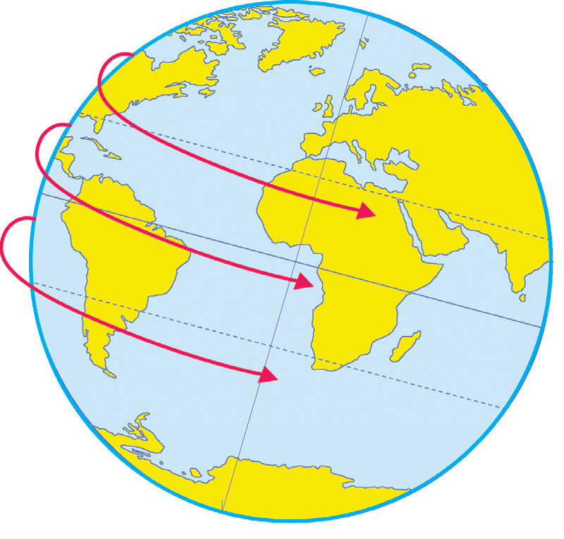

The North PoleWest to EastThe South PoleExercise 3.1
Evidence of the earth’s rotation
Activity 3.2
 Activity 3.2
Activity 3.2The earth’s rotation changes from no movement at the poles to very fast movement at the equator. We do not feel the motion because we move with it. At the equator every point of the earth’s surface moves eastwards at about 1600 kilometres per hour. We do not feel this motion because we move with the earth’s movement at a constant speed. At latitude 40°, the speed is about 1280 kilometres per hour.
In the meantime, at the poles, the speed is zero (0) kilometre per hour. There are several pieces of evidence which show that the Earth is rotating. These include:
Sunrise and sunset:
The Sun is located at the centre of solar system; it does not move. Instead, as the earth rotates from the West to the East, the Sun appears to rise from the East and set to the West. It is this movement of the Earth which explains sunrise and sunset.
Day and night:
The most apparent evidence of the earth’s rotation is the cycle of day and night. The Earth is a sphere. As it spins on its axis, different parts of the planet face the Sun at different times, resulting into daylight in one area and darkness in the other.
Shape of the Earth:
The Earth is not a perfect sphere. It is slightly flattened at the poles due to the absence of centrifugal force and strong gravitational pull. Meanwhile it bulges at the equator because of strong centrifugal force and weaker gravitational pull. All these factors are caused by unequal rotational speed at the poles and at the equator, respectively.
Star Trails:
When you look at the night sky, stars appear to make a circular movement around the North or South Poles, from East to West. In fact, the stars do not move, this happens because the Earth is rotating on its axis from the West to East.
Time Zones:
The division of the Earth into different time zones (24 hours) is based on the earth’s rotation. As the Earth spins on its axis, different regions experience daylight and darkness at different times.
Coriolis Effect:
The Coriolis Effect causes moving objects, like winds and ocean currents to curve or be deflected due to